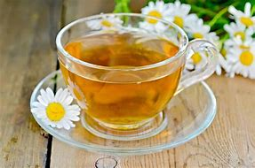

Chá de Camomila
INGREDIENTES E COMO FAZ!
Camomila.
- 1 litros de água potavel.
- Esquentar àgua a 97 graus.
- Adicione 8/9 colher de chá de de flores secas de camomila.
- Espera por 8 minutos.
- Adosa com adosante, açúcar ou mel.
- Adeicione a um copo ou xicara.
 pedra.
melancia.
geladeira.